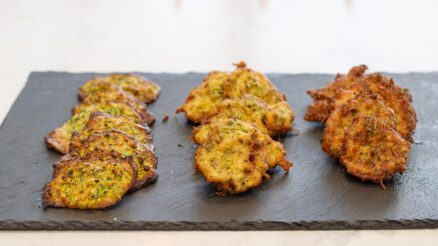
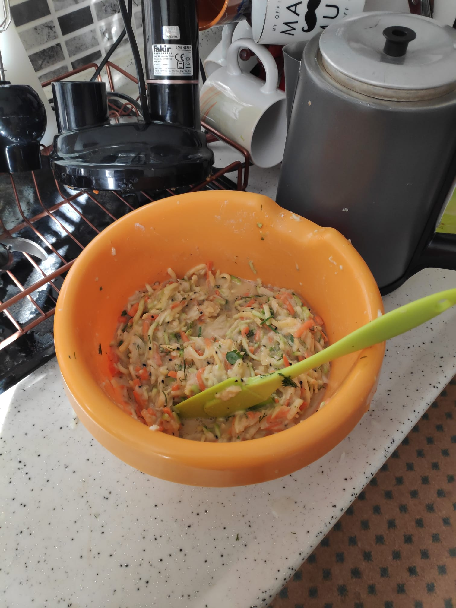
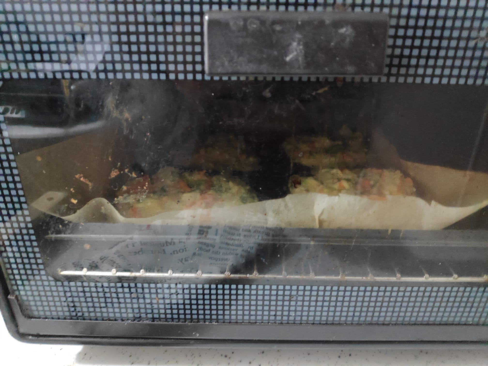
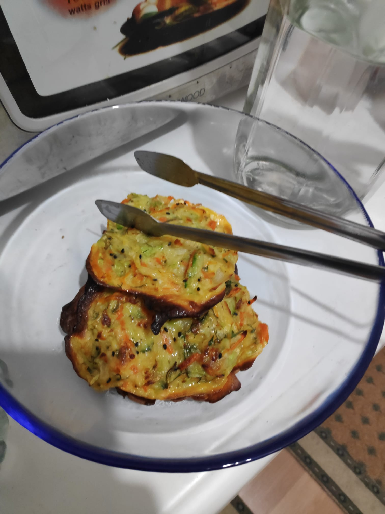
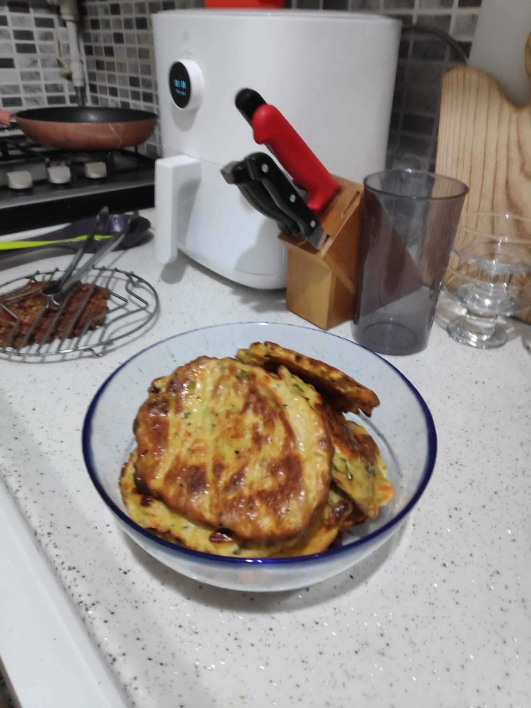

MÜCVER TARİFİ
Refika'nın genel tarifinde bazı değişiklikler yaparak, hepimizin çocukluğundan beri sevdiği mücver tarifi oluşturdum. Ben tarifimi fırında daha az yağlı olarak yapıyorum. Yağ olarak ay çiçek ya da zeytin yağı kullanabilirsiniz.
Refika'nın Mutfağı Mücver Tarifi
Refika'nın Mutfağı Mücver Tarifi youTube videosu
Kullanılan Malzemeler
- 3 adet kabak
- 2 adet orta boy kuru soğan
- 1 adet havuc
- 1 adet orta boy patates
- 4 adet orta boy yumurta
- 2 tutam tuz
- 1 tutam karabiber
- ½ demet dereotu
- ½ demet maydanoz
- 6 tepeleme çorba kaşığı un
- 1 silme tatlı kaşığı mahlep
- 1 silme çorba kaşığı çörek otu
- 1 Paket kabartma tozu
- Ayçiçek yağı veya zeytin yağı
Dediğim gibi Refika'nın tarifinin fırında olan kısmını kullanmaktayım. Aşağıda tarifin bulabilirsiniz. Ekstra malzemeleri sırasıyla eklersiniz. Fırınladığınızda yağlı kağıdı ve içine koyduğunuz mücverlerin üzerine azda olsa pasta fırçası ile yağlayın. Sonradan ısıttığınızda da hafif yağlı olmasını sağlayacaktır.
Mücver Tarifi
Bir mücver fırında mı yoksa derin yağda kızartılınca mı daha güzel olur? Mücveri mükemmel yapmanın 3 püf noktası nelerdir? Bunların cevabını bu videoda rahatlıkla bulabilirsiniz. Haydi başlayalım.
- 3 adet kabağın başını ve sonunu kesin. Rende aparatı taktığınız mutfak robotunda kabakları rendeleyin.
- Rendelenmiş 3 kabağı 1 tutam tuzla kasenin içinde ovup suyunu salmasına yardımcı olun. Suyu çıkan kabakları tel süzgece alın, sıkarak bütün suyunun çıkmasını sağlayın.
- 2 adet orta boy soğanı soyup, ortadan ikiye kesin. Soğanları da mutfak robotuna koyup rendeleyin. Rendelenen soğanları kabakların içerisine ekleyin.
- Makinede rendelenmeyen kabaklar kaldıysa onları da bıçak yardımıyla incecik doğrayıp ekleyebilirsiniz.
- Rendelenmiş kabakların içerisine 4 tepeleme çorba kaşığı un, 4 orta boy yumurta, 1 silme tatlı kaşığı mahlep, 1 silme çorba kaşığı çörek otu, 1’er tutam tuz, karabiber ve yarım demet incecik kıyılmış dereotu ekleyip karıştırın. Ayrıca kabartma tozu ekleyerek mücverinizin puf puf olmasını sağlayın.
- Karışımı çok bekletmeyin, beklemek hazırladığınız harcın sulanmasına neden olacaktır.
- Fırında mücver yapmak için kalan kabak harcını yağlı kağıt serdiğiniz tepsiye porsiyonlayıp üzerine azıcık zeytinyağı gezdirin. 200 derece alt-üst ızgara fanlı ısınan fırının üstten ikinci rafında yaklaşık 15 dakika kadar pişirin
Yapılıştan bazı görüntüler:



